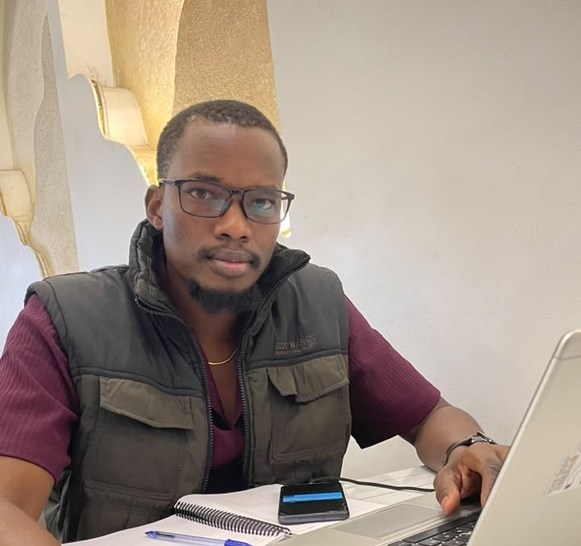

About me

Hey, I'm Lahat Mariel, A founder of KUNIEL. We're building South Sudan's digital future: people, software, and the ecosystem around them.
I'm a Java Developer & Software Engineer. At Kuniel, I lead the software we ship, from national-scale platforms to AI legal assistants and run mentorship through South Sudan Tech Community that I hope to grow and nurture the next generation of South Sudanese engineers.